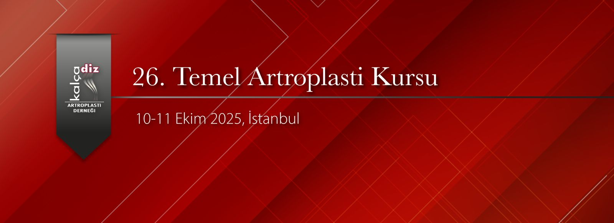

Değerli Meslektaşlarımız,
Kalça Diz Artroplasti Derneği olarak 10-11 Ekim 2025 tarihinde İstanbul Acıbadem Maslak Hastanesi'nde 26. Temel Artroplasti Kursunu gerçekleştireceğiz. Kalça ve diz artroplastisi konusunda kendisini geliştirmek isteyen genç meslektaşlarımıza yönelik temel kursta teorik eğitimlerin yanında maketler üzerinde pratik uygulamalar ve yuvarlak masalarda interaktif vaka tartışmaları ile bilgi ve becerilerin güncellenmesi amaçlanmaktadır. Artroplasti alanında deneyimli eğiticiler ile pratik ve teorik tartışma imkanı elde edilmiş olacaktır.
İki gün sürecek olan kursumuzda; güncellenmiş, interaktif bir program planlanmıştır. Sizlerle deneyimlerimizi karşılıklı paylaşmaktan mutlu olacağız.
26. Temel Artroplasti Kursunda buluşmak üzere saygı ve sevgilerimizle.
Kalça Diz Artroplasti Derneği Başkanı: Prof. Dr. İbrahim Tuncay
Kurs Başkanı: Prof. Dr. Vahit Emre Özden

Resim Galerisi